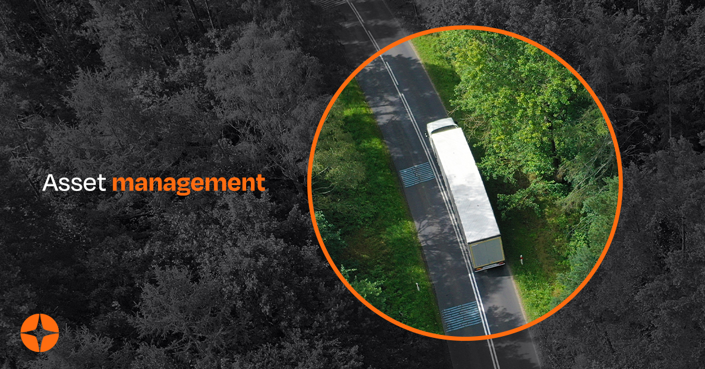

За последние несколько лет транспортные услуги привлекли внимание многих исследователей и практиков, изучающих методы и решения для улучшения логистики, которые позволяют более эффективно доставлять товары. Усилия этих ученых были особенно стимулированы появлением концепции Интернета вещей , которая сильно повлияла на логистику. Действительно, Иванькова Как подчеркивается в расследовании, проведенном. В литературе были предложены различные исследования, чтобы подчеркнуть положительное влияние Интернета вещей на логистику. Фактически, в литературе можно найти различные рекомендации, предлагающие рамки и системы управления для улучшения логистики с помощью Интернета вещей, например, в судоходной отрасли или мусорная промышленность. Однако есть одно конкретное соображение, касающееся управления транспортом, на которое в основном повлияло появление Интернета вещей: отслеживаемость товаров. В этой статье основное внимание уделяется этой теме, предлагая решение, в котором подчеркиваются преимущества, которые iot и его специализированная отрасль, называемая edge computing, могут принести в область отслеживания товаров, используя инновационные решения для быстрого создания прототипов и уделяя особое внимание требованиям безопасности на уровне edge. К сожалению, насколько нам известно лишь несколько работ, в частности с акцентом на безопасность IoT edge устройств через прослеживаемость товаров для быстрого прототипирования решения, которые сосредотачиваются на результате, доступны следующие пункты исследования, разделив их на три основные группы анализа будет: во время доставки товаров через устройство edge для мониторинга системы, предлагая самые три уровня прослеживаемости товаров, собранных в передаваемых данных и может гарантировать безопасность системы, консультирует существующих произведений, обсуждая других и последний, Он сосредоточился на конкретной теме статьи, чтобы представить несколько исследований, посвященных всем темам статьи.
Отслеживание товаров с помощью пограничных устройств
В литературе предлагались различные исследования для улучшения прослеживаемости через конечные устройства. Чанг и др. представили разработку и реализацию интеллектуальной «ленты» для отслеживания транспортных процедур отгрузки определенных продуктов, таких как дорогостоящие и хрупкие грузы. Чтобы предотвратить возможность аномальной зарядки и разрядки, к предлагаемой iTape прикрепляется тонкопленочный пьезорезистивный датчик давления, который затем через пьезорезистивные датчики, которые фактически действуют как конечные устройства, передает аномалию в центральную систему и генерирует предупреждения. Связь устанавливается и гарантируется блоком микроконтроллера (MCU), подобным 8051, производства Intel (Санта-Клара, Калифорния, США). В отличие от нашего решения, предлагаемая система не использует решения для быстрого прототипирования и не указывает, были ли реализованы какие-либо меры безопасности. Кроме того, используемый MCU не обеспечивает каких-либо аппаратных функций для сквозной безопасности. Чен и др. предложили систему холодовой цепи для мониторинга скоропортящихся пищевых продуктов во время хранения, транспортировки и продажи, чтобы гарантировать свежесть контролируемых товаров. Статья представляет собой презентацию концепции, в которой основное внимание уделяется конкретной технологии, используемой для наблюдений, но предлагаемая идея на самом деле способна определять температуру перевозимых товаров, как система, представленная в этом документе. В этой статье не рассматриваются какие-либо детали реализации, поэтому сходство с нашей работой носит лишь концептуальный характер.
Муньос-Хеа и др. вместо этого он больше похож на тот, который принят в нашей статье, но эти авторы в основном сосредотачивают свое внимание на инфраструктуре, используемой для настройки сети устройств с использованием стандарта EPCIS. Фактически, они предлагают систему отслеживания, которая использует преимущества устройства, установленного на уровне периферии с помощью программного обеспечения FreePastry, для демонстрации и выделения возможности системы (хотя на момент написания статьи концепция периферии еще не полностью представлена в литературе)некоторые вопросы безопасности, решенные в рамках исследования. В частности, авторы подчеркивают, как используемое программное обеспечение FreePastry и его дополнения могут гарантировать различные функции безопасности. Однако в предложении не используются никакие аппаратные устройства, и эта функция значительно отличает их работу от нашей. На самом деле меры безопасности, которые наш бизнес принимает на аппаратном уровне, применяются только на более высоком уровне, оставляя некоторые проблемы безопасности нерешенными. Кроме того, используемые технологии не являются решениями для быстрого прототипирования.
Цянь и др. Он предлагает еще одну систему отслеживания, которая сочетает в себе 2D-штрих-код и технологию RFID, что позволяет им отслеживать пшеничную муку. Система использует периферийные устройства для мониторинга продуктов и была оценена с помощью контрастного эксперимента, разделенного на пять разделов, включая запись данных о сырье, запись данных обработки, запись данных упаковки, запись данных логистики и запрос прослеживаемости. Результаты показали эффективность платформы IoT во всех этих процессах и особенно в отслеживаемости. Эта работа является еще одним примером существующих решений, пытающихся использовать тот же подход, что и в нашей статье. В предлагаемом исследовании идентификационная информация хранится на ярлыках «Alien Technology ALN-9654 G Inlay», а затем считывается считывателем «Sense Technology S1853», подключенным к компьютеру. В это время информация отправляется в веб-базу данных через соединение GPRS. Опять же видно, что платформы быстрого прототипирования не используются и меры безопасности не указаны. Кроме того, указанное оборудование не обеспечивает сквозных мер безопасности.
Вангану и др. Он предлагает интегрированную концептуальную основу для поддержки видимости и принятия решений в режиме реального времени при мониторинге температурной среды, в которой хранятся товары в цепочке поставок холода. Предложенное решение не было подтверждено реальным вариантом использования, но идея прикрепить краевой датчик к поддону, на котором хранятся товары, также является хорошим способом контроля состояния товаров в процессе доставки. В исследовании не приводится информация о мерах безопасности и средствах быстрого прототипирования, которые можно было бы использовать при реализации концепции в будущем. Чен и др. внедрила систему мониторинга и контроля за транспортировкой масел, масел и смазочных материалов (ГСМ). В частности, помимо отслеживания местоположения грузовика по GPS, система также может отслеживать температуру в дополнение к попыткам угона. В случае необычных значений температуры перевозимого топлива генерируется сигнал тревоги для предупреждения водителя и принятия немедленных мер. В прототипе решения не обсуждаются подробности об используемом аппаратном и программном обеспечении, и, как следствие, авторы не раскрывают, как гарантируется безопасность на протяжении всей цепочки данных и используются ли какие-либо инструменты быстрого прототипирования.
Безопасность в отслеживании товаров конечного уровня
В этом разделе представлены два основных типа связанных работ. Представляя первые исследования, посвященные алгоритмам безопасности, которые будут использоваться на периферии, во втором разделе представлены решения, использующие так называемую технологию распределенного реестра (DLT) для обеспечения целостности информации о транспортировке товаров. К сожалению, ни одно из таких решений не подходит для быстрого прототипирования.
Чжао и др. внедрила систему сельскохозяйственной прослеживаемости для обеспечения безопасности информации, полученной на периферии. В предлагаемом решении используются специальные теги IoT в сочетании с механизмом шифрования, который может подтвердить отслеживание продукта, то есть его историю, приложение или местоположение. Предлагаемый механизм шифрования не совсем соответствует требованиям быстрого прототипирования, обсуждаемым в нашей работе.
Белу и др. Он предлагает специальный интерфейс IoT, который обеспечивает защиту и целостность данных, передаваемых между конечными точками. Защиту обеспечивает алгоритм шифрования, основанный на двух ключах, хранящихся в источнике и получателе, и очень простая, но эффективная схема кодирования/декодирования. Также и в этом случае предлагаемый механизм шифрования вряд ли соответствует требованиям быстрого прототипирования.
Согласно Месуду и др. Он предлагает алгоритм для повышения безопасности логистики и транспорта за счет использования технологий Интернета вещей и облачных вычислений, которые обмениваются данными по сетям 5G. В предлагаемой концепции шифрование-дешифрование применяется для шифрования данных перед их отправкой, чтобы в процессе обмениваемая информация не могла быть атакована. В отличие от нашей потребности в использовании решений для быстрого прототипирования, представленное решение представляет собой предложение, которое еще не готово для использования в быстрой разработке, и даже ожидается, что оно будет реализовано самими разработчиками.
Гай и др. предлагает пограничную схему, основанную на технологии блокчейн, чтобы гарантировать безопасность хранения и передачи данных для облегчения управления безопасностью пищевых продуктов. Предлагаемое решение направлено на сбор данных о цепочке поставок продуктов питания с помощью периферийных устройств, а затем их загрузку в блокчейн для ведения учета. Таким образом, безопасность обеспечивается технологией блокчейн. Предлагаемая архитектура еще не была реализована ни в одном прототипе и не представляется подходящей для быстрого прототипирования, в основном из-за отсутствия проверки осуществимости и отсутствия доступной документации для использования предлагаемого решения.
Ли и др. Он предлагает модель системы отслеживания, основанную на технологиях блокчейна. Блокчейн предоставляет новый инструмент для отслеживания бизнеса и обеспечивает открытость и прозрачность реестра, исключая возможность вмешательства заинтересованных лиц в реестр. Также и в этом случае предлагаемое решение еще не готово к быстрому прототипированию. Используйте полностью децентрализованную систему отслеживания на основе блокчейна, которая будет интегрирована с устройствами IoT от поставщика к потребителю, чтобы обеспечить прозрачность для Madumidha et al. Авторы представили концепцию «сети поставщик-потребитель», теоретического сквозного приложения для отслеживания продуктов питания для создания распределенного реестра, доступного для всех пользователей в сети. Это решение более интегрировано, чем его предшественники, но использование блокчейна еще не соответствует требованиям быстрого прототипирования.